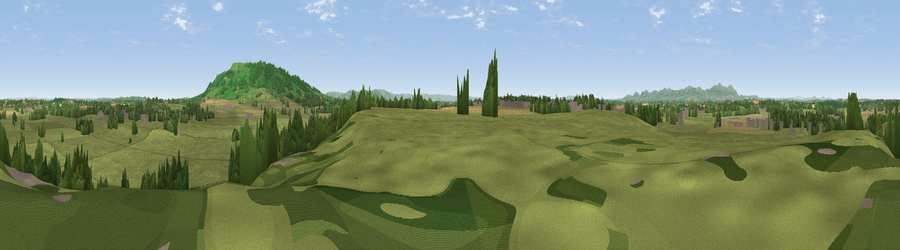

Viewpoint near Eckington
#18984 in England · top 46% of its area beats it · near EckingtonWhere it is
The exact computed spot (SO 91075 40625). Click the marker for map links.
The view, rendered

A 360° render of this exact spot computed from the terrain model, tree cover and land cover — summer colours, afternoon light, calibrated against photographs of famous viewpoints. Real trees, hedges and buildings will differ in detail.
The panorama
Grey silhouette: terrain skyline in each direction (720 bearings, Earth curvature and refraction included). Dashed green: skyline with trees (+15 m) and buildings (+8 m) as obstacles. Blue strip: how far the ground is visible on each bearing.
Where the view opens
Wedge length = distance to the farthest visible ground on that bearing (vegetation-aware). Rings at 10, 25 and 50 km.
What fills the view
69% grassland · 13% woodland · 12% cropland · 2% water · 2% built-up ·
Angular shares of the visible panorama (visual magnitude), not map area. Landscape diversity 0.42 (0–1 Shannon).
Key numbers
More beautiful places nearby
The staircase of upgrades: each row has a higher view potential than everything closer. Driving times are estimates from straight-line distance, calibrated against real road routing — check an actual route before setting out.
| Place | Direction | Drive | Score |
|---|---|---|---|
| Brockeridge Common | SSW · 3 km | ~7 min | 54.9 |
| Viewpoint near Bredon's Norton | ESE · 4 km | ~8 min | 81.3 |
| Bredon Hill | E · 5 km | ~10 min | 83.0 |
| Black Hill | W · 14 km | ~26 min | 83.1 |
| Pinnacle Hill | W · 14 km | ~26 min | 85.7 |
| Worcestershire Beacon | WNW · 15 km | ~27 min | 87.1 |
| Viewpoint near West Quantoxhead | SW · 126 km | ~150 min | 87.9 |
| Viewpoint near West Quantoxhead | SW · 126 km | ~151 min | 88.7 |
52.06393, -2.13160 · source: screening · position refined by local search. Computed location — check access rights before visiting.